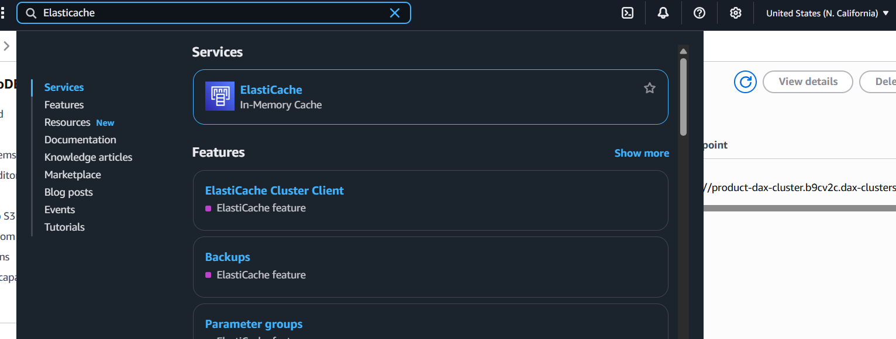
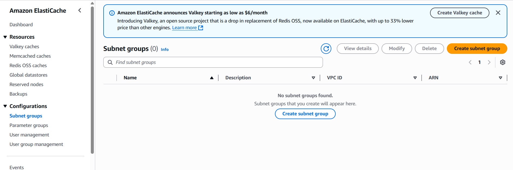
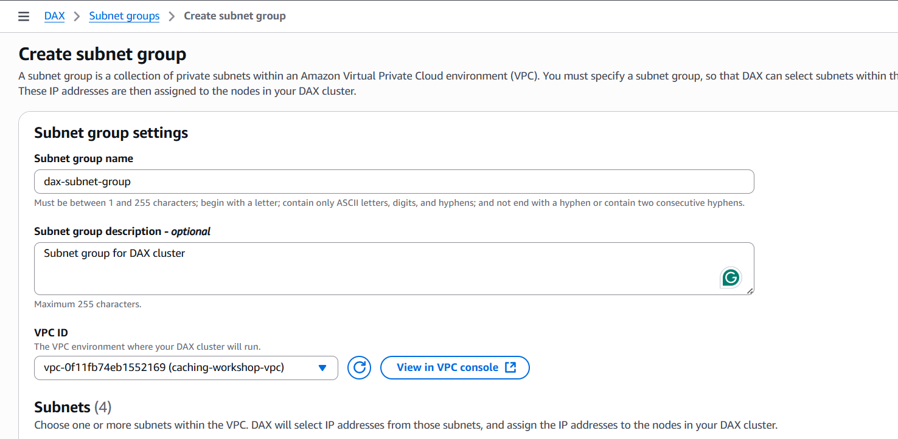
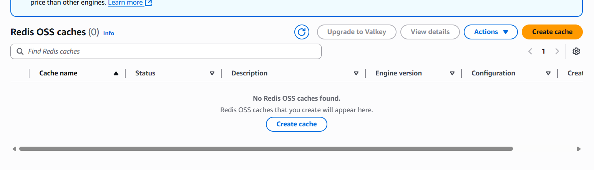
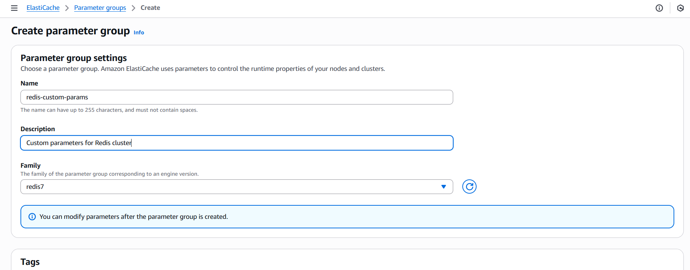
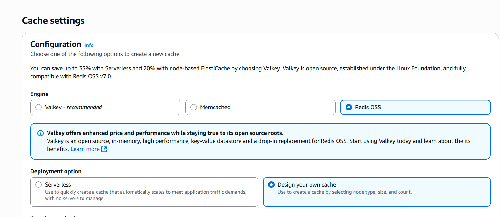
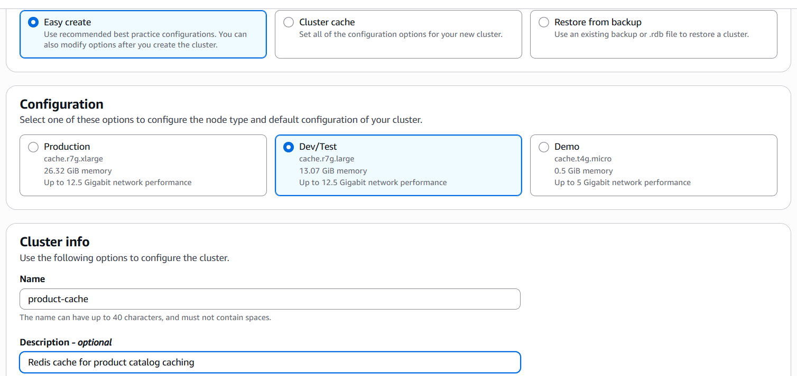
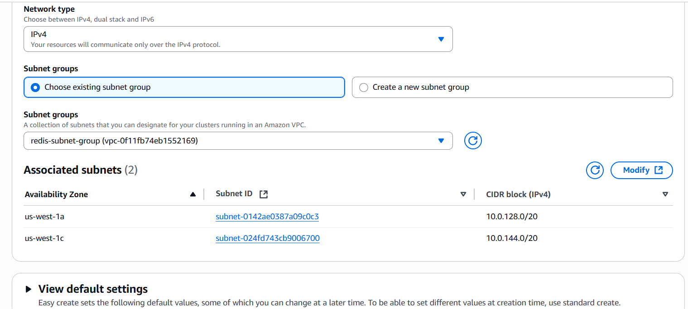

In this step, we’ll create an ElastiCache Redis cluster that will serve as our application-level cache. This will be the first layer of caching that our application checks before falling back to DAX and DynamoDB.

Click Subnet groups in the left navigation
Click Create subnet group

Enter subnet group details:
redis-subnet-groupSubnet group for Redis cluster
caching-workshop-vpc

Select availability zones and subnets:
Click Create


Valkey offers enhanced price and performance (up to 33% savings with Serverless, 20% with node-based) and is fully compatible with Redis OSS v7.0. For production workloads, consider Valkey as a drop-in replacement.



Serverless option automatically scales but “Design your own cache” gives us more control over node types and costs for this workshop.
Configure basic cache information:
product-cacheRedis cache for product catalog caching
cache.t3.microMulti-AZ with replicas provides high availability and automatic failover capabilities.
Configure network settings:
redis-subnet-group
Configure security:
redis-sg (remove default)
In production environments, always enable encryption at rest and in transit for security compliance.
Configure backup options:
Configure maintenance:
Configure logging (optional):
Review all settings
Verify:
Click Create Redis OSS cache
Redis cache creation takes 10-15 minutes. The cache will show “Creating” status during this time.
Monitor the cache creation progress
You can see individual nodes being created
Once created, the cache status will show “Available”
Click on the cache name to view details
product-cache.xxxxxx.cache.amazonaws.com:6379
product-cache-ro.xxxxxx.cache.amazonaws.com:6379
Use the same test EC2 instance from the DAX testing, or launch a new one:
app-sg# Update system
sudo yum update -y
# Install Redis CLI
sudo yum install -y redis6
# Connect to primary endpoint
redis-cli -h product-cache.xxxxxx.cache.amazonaws.com -p 6379
# Test connection
PING
# Set a test key
SET test:key "Hello Redis from Workshop"
# Get the key
GET test:key
# Set with expiration
SETEX product:PROD001 300 '{"name":"Laptop Pro","price":999.99}'
# Check TTL
TTL product:PROD001
# Get product data
GET product:PROD001
# Check Redis info
INFO server
# Connect to primary endpoint
redis-cli -h product-cache.xxxxxx.cache.amazonaws.com -p 6379
# Set LRU eviction policy
CONFIG SET maxmemory-policy allkeys-lru
# Verify configuration
CONFIG GET maxmemory-policy
# Set multiple products with different TTLs
SETEX product:PROD001 300 '{"id":"PROD001","name":"Laptop Pro","price":999.99,"category":"Electronics"}'
SETEX product:PROD002 600 '{"id":"PROD002","name":"Smartphone X","price":699.99,"category":"Electronics"}'
SETEX product:PROD003 900 '{"id":"PROD003","name":"Cloud Guide","price":49.99,"category":"Books"}'
# Check all keys
KEYS product:*
# Check TTL for each key
TTL product:PROD001
TTL product:PROD002
TTL product:PROD003
# Get cached data
GET product:PROD001
In the ElastiCache console, go to the Monitoring tab
Key metrics to monitor:
Record the following information for application configuration:
product-cacheproduct-cache.xxxxxx.cache.amazonaws.com:6379
product-cache-ro.xxxxxx.cache.amazonaws.com:6379
cache.t3.microredis-sgredis-subnet-group
Possible Causes:
Solutions:
Possible Causes:
Solutions:
Your ElastiCache Redis setup is now complete! You have:
✅ Redis OSS Cache with primary and replica
nodes
✅ Multi-AZ deployment for high availability
✅ Subnet Group configured for private network
access
✅ Security Group allowing application access
✅ Automatic backups enabled
✅ CloudWatch monitoring configured
✅ Connection tested and verified
Use the primary endpoint for read/write operations and reader endpoint for read-only operations to distribute load and improve performance.
Next, we’ll deploy our Node.js application that will utilize both Redis and DAX for multi-layer caching.